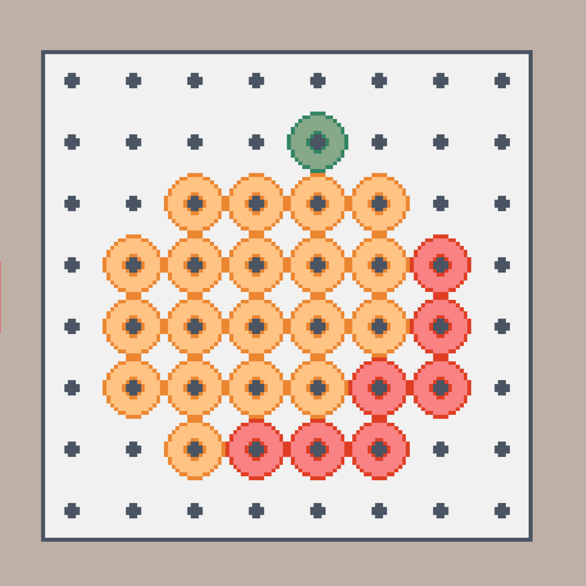
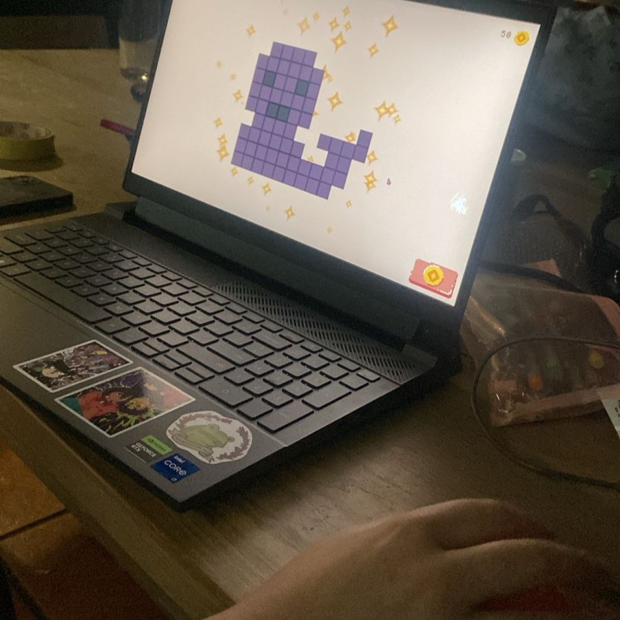
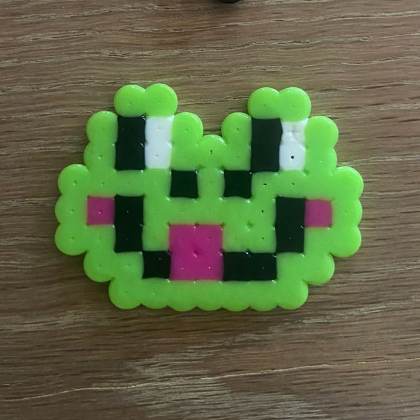

Many crafting based systems in games are formatted around collecting resources and combining them in UI menus. The goal of this prototype was to emulate a real-world craft and bring it to the game world. This crafting system is still largely UI-driven but aims to encourage creativity, rather than limit it.

The bead placement mechanic was created using unity tilemasp. The tilemap is changed at runtime based on player input. I did it this way as it was a lot more storage-effective than storing hundreds of game objects.
This system does come with some drawbacks as the tilemap is very rigid. Objects can not exist between tiles when on the tilemap. To ensure that bead placement felt more responsive I created an object pool that spawns a bead prefab where clicked and plays an animation. All animations in this prototype were created in code using DOTween.
This project has recieved a lot of positive feedback. The people who loved this prototype, really loved it and would continue to engage with it days after the playtest. Playtesters made and sent me images of their creations. A benefit of a system like this is that it encourages creativity with a very low barrier to entry. Because the supplies, and space given are so limited it takes off some pressure from the creative process.
Of course not everyone loved it. Some playtesters wished the sysem had more challenges or eneimes. This perspective is valid, but not every one feels this way. Popular games today tend to have the same core mechanics and interactions. But this limits the potential systems we can create in the future.


This project really called for a pixel-art style. I believe that pixel art evokes a feeling of nostalgia because of it's association with retro games. This craft is similarly associated with childhood memories. When Perler Beads are perfectly melted they also form little squares reminiscent of pixel art.